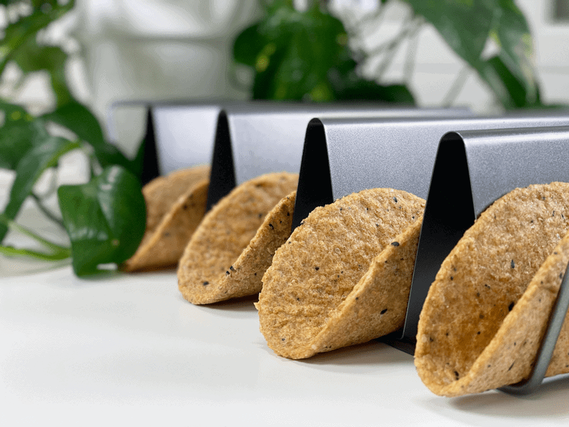
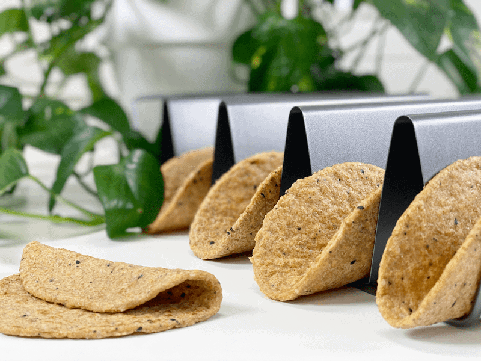
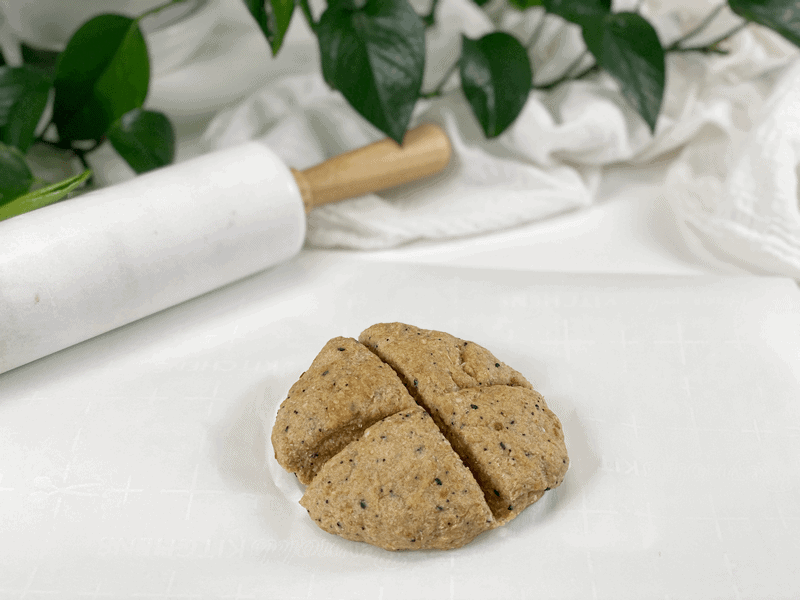
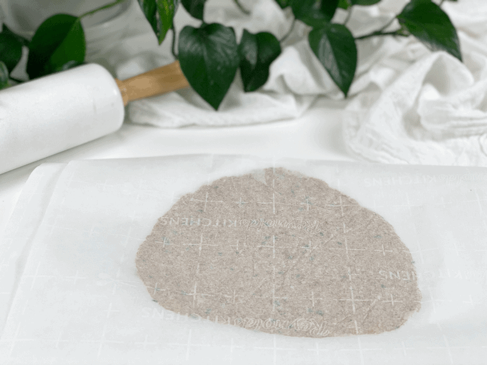
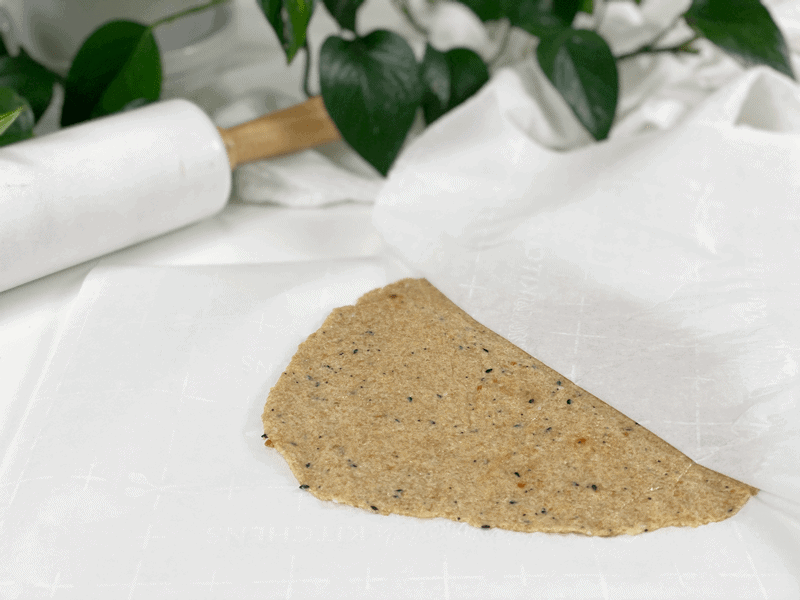
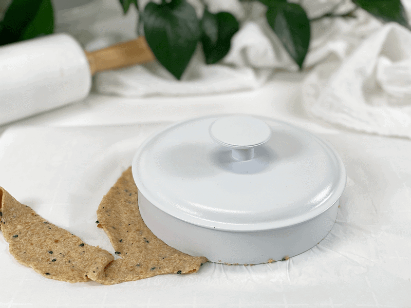
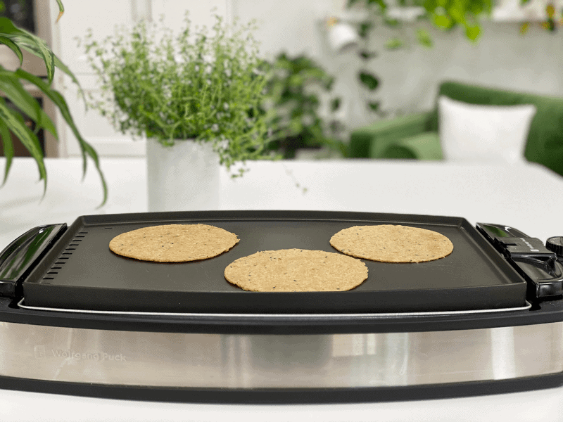
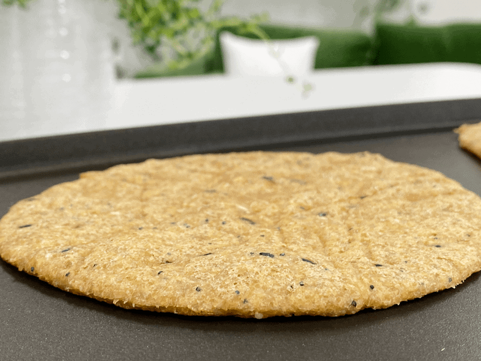
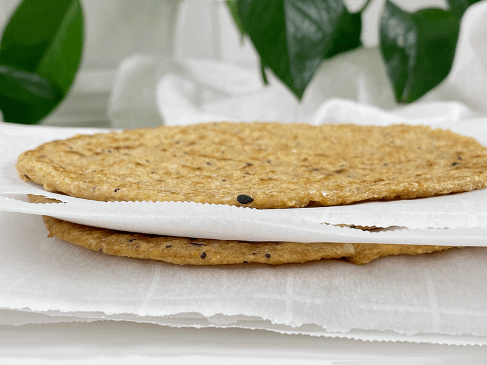

Everything Bagel Flax Wrap | Cooked | Oil-Free

You don’t have to be gluten-free, nut-free, soy-free, grain-free, oil-free, or even vegan to enjoy these wraps. They are flexible, wrappable, bendable (I might enroll them in gymnastics class) delicious, and nutritious. Another great recipe to add to your arsenal. These wraps are budget-friendly and require minimal ingredients, which is my kind of cooking. I seasoned them with Everything Bagel Sesame seasoning, which contains sesame seeds, sea salt flakes, dried minced garlic, dried minced onion, black sesame seeds, and poppy seeds. It was a heavenly addition.

With the flaxseed wraps made, the dishes washed, and the floor swept, I called out “That’s a Wrap!” Not that anyone was there to witness my achievements; it’s just like putting the stamp of approval on my work. Plus, since I was raised as an only child, I have mastered the art of entertaining myself. I am growing anxious about sharing this simple recipe with you, so I am going to dive right into a few things before releasing you to go play in the kitchen.
Ingredient Run-Down
Flaxseeds
Water
- Such a simple ingredient, but there’s a trick to making successful tortilla wraps, and that is the water.
- The water needs to be boiling hot, as cold or lukewarm water will make the dough hard to roll out and the final wraps will be quite stiff (not pliable).

Make Every Bite Count
- Whenever a recipe calls for flax meal, they are simply referring to flaxseeds that have been ground to a flour. It is always best to do this yourself as needed. Flax seeds are high in healthy fats and can go rancid. The act of cracking the seeds (when creating a flour) activates the nutrients, making it easier for your body to absorb the nutrients and aiding in digestion.
- If you enjoy these wraps, make a dozen or more, freezing them for future meals. Batch cooking saves time and helps you stay on track with healthy eating, both of which reduce stress. Less stress makes for a healthier and happier YOU!
- When is the last time you stopped to marvel at the chemistry in the every day ingredients we use? Here we have nothing but seeds and water, yet it creates this amazing dough that transforms into pliable wraps. Ready to geek out for 10 seconds? Flaxseed mucilage (which is activated by the water) is composed mainly of polymeric carbohydrates, galacturonic acid, rhamnose, galactose, fructose, and glucose. It’s because of these that we are able to make this amazing recipe today.
- 1 cup ground flaxseeds
- 2/3 cup hot water
- 1/8 tsp sea salt
- 1 Tbsp Everything Bagel Seasoning
Creating the Dough
- In a medium-sized saucepan, bring the water to a boil. At that point, add the ground flaxseed flour and salt and immediately turn the heat off.
- Stir with a wooden spoon or spatula, until the flaxseed meal absorbs all the water (about 1-2 minutes).
- During this process, the flaxseed meal will form a dough and gradually pull away from the sides of the pan.
- Let the dough sit for about 15 minutes before you start to roll it out, which will reduce the stickiness.
Creating the Wraps
- Place either a sheet of parchment paper, a nonstick sheet from your dehydrator, or a silicone mat on the counter in front of you. Do not use wax paper.
- It’s best to use a flexible non-stick surface so you can flip the rolled-out wrap into your hand and then peel off the non-stick sheet.
- You will need two non-stick pieces for the rolling process–one on the bottom to prevent the dough from sticking to the surface and one on top to prevent the dough from sticking to the rolling pin.
- Remove the dough from the saucepan and place it on the non-stick surface. When cool to the touch, separate the dough into 4 equal pieces and roll into a ball.
- Roll out each dough ball between two pieces of parchment paper about 1/16″ thickness.
- Take a round bowl or pan lid that fits that measurement and place on top of rolled-out dough, then cut around the edges of the template with a butter knife to create the shapes. Remove the excess dough and place it in a pile to make one more tortilla.
- Be careful with the knife that you use; if it is sharp and pointy, you risk cutting your non-stick sheet.
Cooking the Wrap
- Preheat a non-stick pan over medium heat.
- If you own a pancake griddle, use that, so you can cook more than one at a time.
- Transfer the tortilla and cook it for 60-90 seconds, depending on your pan and heat. Flip and cook for extra 30-60 seconds.
- Don’t overcook the tortillas, or they will become crispy and stiff.
- Transfer the cooked tortillas to a cooling rack or plate.
- Serve warm or cold; they keep their flexibility either way.
- To reheat, place a fry-pan over medium heat. Place the wrap in the pan and warm it on each side for about 3-60 seconds.
Storage | Fridge | Freezer
- Store leftover tortillas in an air-tight container in the fridge for up to 5 days. Make sure to place a piece of parchment paper between each tortilla so they don’t stick to one another.
- Freeze tortillas in an airtight container for 1-2 months. Again, add that piece of parchment paper between each one.
-

-
After letting the dough rest for 15 minutes, divide it into 4 sections.
-

-
Roll each section out between two non-stick surfaces.
-

-
Remove the top non-stick sheet…
-

-
Create the desired sized circles and place the excess dough in a pile. Repeat until all the dough to formed into wraps.
-

-
In a non-stick pan or on a griddle, cook on high (400 degrees), flipping after 90 seconds.
-

-
It will start to puff up a little with air, which is normal.
-

-
Store with parchment paper in between each one, place in an airtight container and put in the fridge.
© AmieSue.com